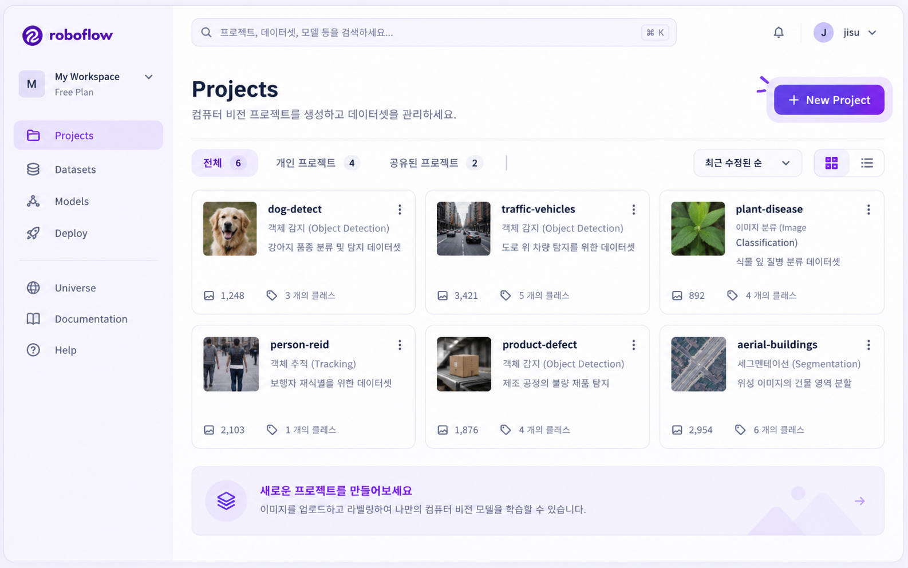
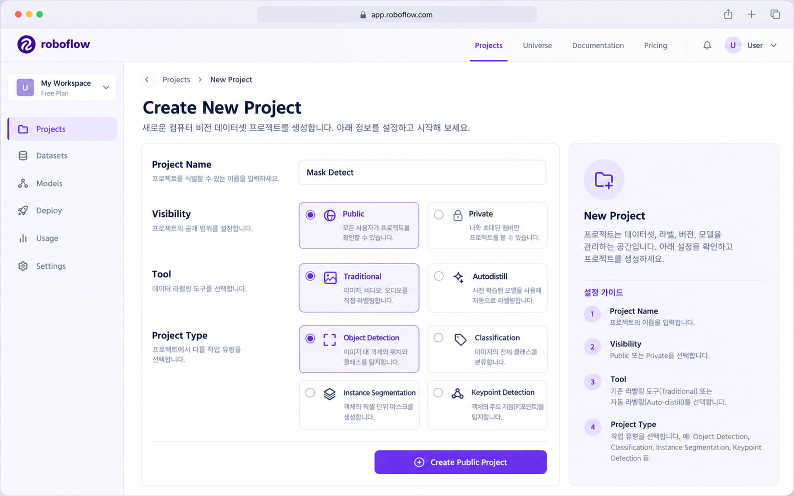

ROBOFLOW · COMPUTER VISION DATASET
Dataset Pipeline · Project Setup
Roboflow 02. Project 생성
Project Name · Visibility · Tool · Project Type를 설정하고 Object Detection Dataset 작업 공간을 준비합니다.
Project 생성은 Image를 Upload하거나 Bounding Box를 만드는 단계가 아닙니다. 앞으로 만들 Computer Vision Dataset의 작업 이름, 공개 범위, Tool, Task 종류를 먼저 정의하는 단계입니다. 특히 Project Type = Object Detection을 선택함으로써 이후 Annotation이 Bounding Box + Class 구조로 이어집니다.
학습 목표
-
01
Workspace와 Project의 관계를 설명한다.
-
02
Project Name과 Class Name을 구분한다.
-
03
Visibility가 Project Type과 다른 설정임을 설명한다.
-
04
교안에서 Tool = Traditional을 선택한다는 사실과 원문에서 선택 이유는 설명하지 않는다는 점을 구분한다.
-
05
Project Type = Object Detection이 이후 Annotation 방식을 결정하는 이유를 설명한다.
-
06
Classification과 Object Detection의 차이를 구분한다.
-
07
Project 생성 직후 Dataset 상태를 설명한다.
-
08
Project 생성이 다음 Upload 단계와 어떻게 연결되는지 설명한다.
교안 설정: Project Name 예시 = Mask Detect, Visibility = public, Tool = Traditional, Project Type = Object Detection
01 · LESSON GOAL
이번 실습에서 무엇을 만드는가?
이번 단원의 결과는 완성된 YOLO Dataset도, 학습된 Model도 아닙니다. 앞으로 Object Detection Dataset을 제작할 Project Container 를 만드는 것이 목표입니다.
Project 없음
Roboflow에 새 Dataset 작업이 아직 존재하지 않습니다.
Object Detection Project
Image를 Upload하고 Annotation할 수 있는 작업 공간이 준비됩니다.
Project 생성 직후에는 Image도, Bounding Box도, Class Annotation도 아직 없습니다.
02 · PIPELINE POSITION
Roboflow 전체 Workflow에서의 위치
지금은 이후 모든 Dataset 작업이 들어갈 시작 Container를 만드는 단계입니다.
03 · CORE CONCEPTS
Project 생성 화면의 핵심 용어
| 용어 | 이번 단원에서의 의미 | 핵심 질문 |
|---|---|---|
| Workspace | 여러 Project를 관리하는 상위 작업 공간 | Project들을 어디에 관리할까? |
| Project | 하나의 Computer Vision Dataset 제작 단위 | 어떤 Dataset 작업을 할까? |
| Project Name | Project를 식별하는 이름 | 이 작업을 무엇이라고 부를까? |
| Visibility | Project 공개 범위와 관련된 설정 | 누가 접근할 수 있는가? |
| Tool | 교안에서 Traditional을 선택하는 별도 설정 | 이번 실습에서 어떤 Tool 설정을 사용할까? |
| Project Type | Computer Vision Task의 종류 | 어떤 문제를 풀 것인가? |
| Object Detection | 객체의 종류와 위치를 함께 다루는 Task | 무엇이 어디 있는가? |
Object Detection Target
=
Class
+
Bounding Box
04 · VISUAL UNDERSTANDING
Project Type이 이후 Annotation 구조를 결정한다
사진 전체의 종류
객체 종류 + 위치
객체가 어디 있는가?
그 객체가 무엇인가?
05 · SCREEN WALKTHROUGH
교안 화면 따라하기
이번 단원은 UI 절차가 핵심이므로 각 화면에서 어디를 클릭하는가 → 왜 필요한가 → 상태가 어떻게 변하는가 를 함께 확인합니다.

Projects → New Project
- 어디를 클릭?
- Projects → New Project
- 왜?
- 새로운 Computer Vision Dataset 작업을 만들기 위해
- 상태 변화
- Project 목록 화면 → Project 설정 Form
- 다음
- Project Name · Visibility · Tool · Project Type

Project 설정
- Project Name
- 교안 예시: Mask Detect
- Visibility
- public
- Tool
- Traditional
- Project Type
- Object Detection
- 완료
- Create Public Project
위 네 설정값과 Create Public Project 흐름은 교안에서 직접 확인되는 내용입니다.
06 · PROJECT NAME
Project Name — Dataset 작업 전체의 이름
Project Name은 앞으로 Upload, Annotation, Version을 관리할 전체 작업 단위의 이름입니다.
Mask Detect
전체 Dataset 작업 이름
with-mask
without-mask
이후 Dataset 안의 객체 Category
Project Name
≠
Class Name
실제 프로젝트에서는
mask-detection,
helmet-detection처럼
목적을 알아보기 쉬운 이름을 사용하면
Project가 많아졌을 때 관리하기 좋습니다.
이 Naming Rule은 교안 원문이 아니라 보충 설명입니다.
07 · VISIBILITY
Visibility — 공개 범위 설정
Visibility는 Project의 공개 범위와 관련된 설정입니다. Object Detection 여부를 결정하는 설정이 아닙니다.
이번 교안에서 선택한 실습 설정입니다. 실제 프로젝트에서는 Dataset의 공개 가능 여부를 별도로 검토합니다.
얼굴·개인정보·회사 내부 시설·의료 Image 등은 Dataset Governance와 공개 정책을 먼저 확인하는 것이 중요합니다.
08 · TOOL
Tool — 교안에서는 Traditional 선택
교안은 Tool에서 Traditional을 선택하는 화면은 보여주지만, 왜 이 값을 선택해야 하는지에 대한 자세한 설명은 제공하지 않습니다. 따라서 이번 학습 자료에서는 “교안 설정값 = Traditional”까지만 원본 사실로 정리합니다.
Tool
≠
Project Type
Object Detection 여부는 아래의 Project Type에서 결정합니다.
09 · PROJECT TYPE
Project Type — Dataset의 정답 구조를 결정
Project Type은 이후 어떤 Annotation을 만들 것인지와 직접 연결되는 가장 중요한 설정입니다.
이후 Annotation Editor에서 실제로 사각형 도구를 선택하고, 탐지할 객체를 Drag하여 Box를 만든 뒤 Label을 지정합니다. 즉 Project Type과 Annotation 방식이 연결되어 있습니다.
10 · OBJECT DETECTION
Classification과 Object Detection 비교
Image 전체에 하나의 Class
여러 객체의 종류와 위치
이번 Roboflow 실습은 나중에 객체 주변에 사각형 Bounding Box를 만들기 때문입니다.
11 · CREATE PROJECT
Create Public Project
- Project Name
- Visibility
- Tool
- Project Type
Project 생성 직후
12 · DATASET STATE
Dataset은 아직 어떤 상태인가?
Workspace만 존재
새 작업 없음
Project 설정
Name / Visibility / Tool / Type
Project 생성
Image를 받을 준비 완료
Upload
Raw Image 등록
13 · COMMON MISTAKES
초보자가 자주 하는 실수
Project Name과 Class Name 혼동
Project Name은 전체 작업 이름이고, Class는 이후 객체에 붙이는 Category입니다.
Visibility와 Project Type 혼동
Visibility는 공개 범위, Project Type은 Computer Vision Task입니다.
Tool과 Project Type을 같은 것으로 생각
Traditional과 Object Detection은 서로 다른 UI 설정입니다.
Classification을 잘못 선택
Bounding Box가 필요한 Dataset이라면 Object Detection Task가 필요합니다.
Project를 만들면 Dataset이 완성됐다고 생각
Project 생성 직후에는 Image와 Annotation이 없습니다.
public을 모든 Project의 정답처럼 외움
이번 교안의 설정일 뿐, 실제 Project에서는 공개 정책을 별도로 판단합니다.
Project 단계에서 Class까지 만들었다고 착각
Class 생성은 이후 Annotation 단계에서 진행합니다.
14 · UI STATUS / ERROR READING
오류 메시지보다 현재 Project 상태를 확인
첨부 교안에는 Project 생성 단계의 실제 오류 Popup이 없습니다. 따라서 아래는 실습 시 사용할 수 있는 상태 점검 기준입니다.
| 증상 | 먼저 확인 |
|---|---|
| New Project 화면에 못 들어감 | Login / Projects 화면 여부 |
| Bounding Box 작업 UI가 예상과 다름 | Project Type이 Object Detection인지 |
| Project 이름과 Class가 헷갈림 | Project Name과 Class 역할 구분 |
| 공개 범위가 예상과 다름 | Visibility 설정 |
| Project를 만들었는데 Image가 없음 | 아직 Upload 단계 전인지 확인 |
15 · PRACTICAL CONNECTION
실무에서는 Project 생성 전에 무엇을 결정하는가?
실무 보충
Task를 잘못 선택하면?
16 · INTERVIEW / REVIEW
면접 포인트
Q01. Roboflow Project란 무엇입니까?
하나의 Computer Vision Dataset을 Upload, Annotation, Version, Export까지 관리하는 작업 단위입니다.
Q02. Project를 Image Upload보다 먼저 만드는 이유는 무엇입니까?
앞으로 만들 Dataset의 작업 공간과 Computer Vision Task를 먼저 정의하기 위해서입니다.
Q03. 이번 교안의 Project Name 예시는 무엇입니까?
Mask Detect입니다.
Q04. Project Name과 Class Name은 어떻게 다릅니까?
Project Name은 전체 Dataset 작업 이름이고, Class Name은 Dataset 안에서 탐지할 객체 Category입니다.
Q05. Visibility는 무엇입니까?
Project의 공개 범위와 관련된 설정입니다. 교안에서는 public을 선택합니다.
Q06. public은 Object Detection의 필수 조건입니까?
아닙니다. Visibility와 Project Type은 별개의 설정입니다.
Q07. 이번 교안의 Tool은 무엇입니까?
Traditional입니다. 다만 원본 교안은 상세한 선택 이유까지 설명하지 않습니다.
Q08. Project Type은 무엇입니까?
Object Detection입니다.
Q09. 왜 Object Detection을 선택합니까?
객체의 Class뿐 아니라 위치를 Bounding Box로 학습하기 위해서입니다.
Q10. Object Detection의 정답 구조는 무엇입니까?
개념적으로 Class + Bounding Box입니다.
Q11. Classification과 Object Detection의 차이는 무엇입니까?
Classification은 Image 전체의 Category를 예측하고, Object Detection은 객체별 Class와 위치를 함께 예측합니다.
Q12. Create Public Project 후 Dataset은 완성됩니까?
아닙니다. Project만 생성되며 Image와 Annotation은 아직 없습니다.
Q13. Project 생성 후 다음 단계는 무엇입니까?
Upload Data에서 Select Files 또는 Select Folder로 Image를 등록합니다.
Q14. Project 생성 단계에서 Class도 만듭니까?
아닙니다. Class는 이후 Annotation Editor에서 생성합니다.